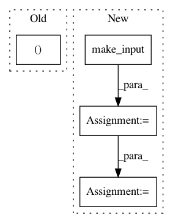

029fdb5624fafee03a59f49d86b676f25851febf,python/baseline/tf/seq2seq/train.py,Seq2SeqTrainerTf,train,#Seq2SeqTrainerTf#Any#Any#,31
Before Change
start_time = time.time()
steps += 1
feed_dict = self.model.make_feed_dict(src, src_len, tgt, tgt_len, do_dropout=True)
_, global_step, lossv = self.model.sess.run([self.train_op, self.global_step, self.loss], feed_dict=feed_dict)
total_loss += lossv
duration += time.time() - start_time
After Change
for batch_dict in ts:
start_time = time.time()
steps += 1
feed_dict = self.model.make_input(batch_dict, do_dropout=True)
vals = self.model.sess.run(fetches, feed_dict=feed_dict)
global_step = vals["global_step"]
lossv = vals["loss"]
total_loss += lossv
duration += time.time() - start_time
In pattern: SUPERPATTERN
Frequency: 3
Non-data size: 4
Instances
Project Name: dpressel/mead-baseline
Commit Name: 029fdb5624fafee03a59f49d86b676f25851febf
Time: 2017-11-22
Author: dpressel@gmail.com
File Name: python/baseline/tf/seq2seq/train.py
Class Name: Seq2SeqTrainerTf
Method Name: train
Project Name: dpressel/mead-baseline
Commit Name: 029fdb5624fafee03a59f49d86b676f25851febf
Time: 2017-11-22
Author: dpressel@gmail.com
File Name: python/baseline/pytorch/tagger/train.py
Class Name: TaggerTrainerPyTorch
Method Name: _test
Project Name: dpressel/mead-baseline
Commit Name: 7a4f4148317f7274c0c88095c037e93f95b1d00d
Time: 2018-09-25
Author: dpressel@gmail.com
File Name: python/baseline/pytorch/classify/model.py
Class Name: LSTMModel
Method Name: make_input